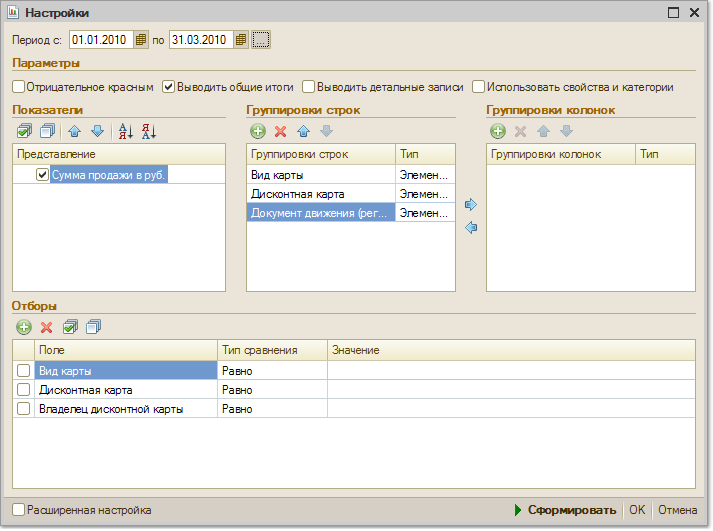

Меню Отчеты > Продажи > Продажи по дисконтным картам
Отчет позволяет анализировать объем продаж по различным дисконтным картам. Информация о дисконтных картах заносится в справочник "Информационные карты".

Показатели
В качестве показателя отчета выводится информация о сумме продажи по дисконтной карте в валюте управленческого учета.
Группировки строк и колонок
Данные в отчете можно группировать по видам дисконтных карт, по дисконтной карте и по владельцам дисконтных карт. Данные в отчете можно детализировать до уровня того документа, по которым осуществлялись продажи по дисконтным картам.